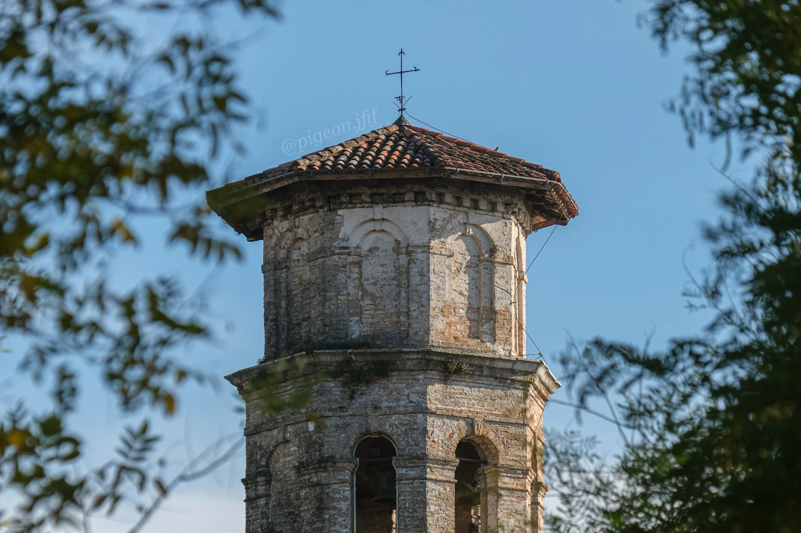

Le raccolte / Archivio fotografico
Ogni uscita,
un capitolo.
Luoghi, soggetti e momenti che stanno bene insieme. Qui comincia l’archivio.
L'archivio
03 raccolte
01 / Aviazione / Settembre 2026
Air Show
Jesolo
Frecce, Eurofighter, F-35 e altri passaggi dal Jesolo Air Show.
Guarda le fotografie
02 / Animali
Birbs
Noale & Verona
Piume, riflessi e piccoli incontri tra Noale e Verona.
Guarda le fotografie
03 / Street
Street
Pordenone & Verona
Vicoli, torri, biciclette e dettagli urbani tra Pordenone e Verona.
Guarda le fotografie